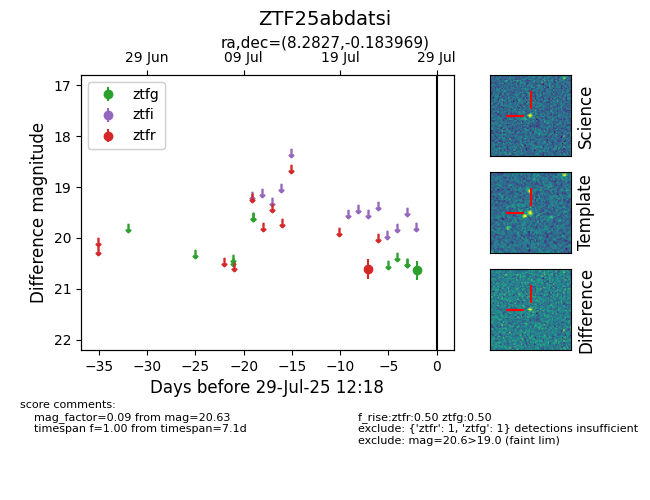

Target ZTF25abdatsi at 2025-07-29 12:18, see:
FINK: fink-portal.org/ZTF25abdatsi
Lasair: lasair-ztf.lsst.ac.uk/objects/ZTF25abdatsi
ALeRCE: alerce.online/object/ZTF25abdatsi
alt names
ZTF25abdatsi (ztf,fink)
coordinates:
equatorial (ra, dec) = (8.2827,-0.18397)
galactic (l, b) = (112.9131,-62.69905)
photometry
last ztfg=20.63, ztfr=20.61
1 ztfg, 1 ztfr detections
